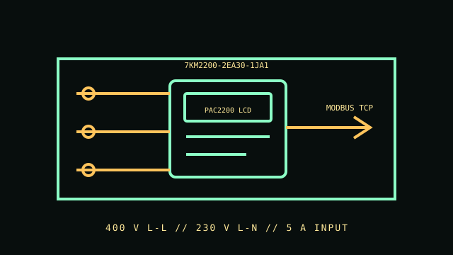

[ PANEL METER // 7KM2200-2EA30-1JA1 ]
Siemens SENTRON PAC2200
SENTRON PAC2200 digital measuring device with order number 7KM2200-2EA30-1JA1. This DIN-rail instrument measures electrical quantities and communicates over Modbus TCP; it is not a circuit breaker or protective relay.

VARIANT CONTROL: PAC2200 order numbers define communication, certification and input configuration. Do not transfer another order-code's specifications to this meter.
Specifications & compatibility
| Exact order number / function | Siemens SENTRON PAC2200, 7KM2200-2EA30-1JA1; three-phase measuring device, Modbus TCP and MID variant as listed by Siemens. |
|---|---|
| Measured metrics | Active, reactive and apparent energy and electrical system measurements as supported by the PAC2200 configuration. |
| Voltage / phase | Three-phase; exact SKU listing states 400 V line-to-line and 230 V line-to-neutral. |
| Current range / accuracy | 5 A input as stated in the order-code listing. The cited exact-SKU catalog summary does not establish a measurement accuracy figure; none is asserted here. |
| Display / network / output | LCD; Modbus TCP. Listed as self-powered; confirm terminals and data map in the manual. |
| Form factor | DIN-rail mount with screw terminals. |
| Host compatibility | Modbus TCP-compatible PLC, building-management system or data logger. No OS-specific host requirement is listed. |
| Electrical safety | Connect only to rated voltage/current circuits according to the exact PAC2200 manual and local code. Installation and commissioning require qualified personnel; the meter does not replace fuses, breakers or protective relays. |
Installation & archival notes
- Record the full MLFB/order number, device firmware, system wiring method and Modbus configuration.
- Observe the manual's terminal, conductor, fuse and enclosure requirements; isolate power before wiring.
- Do not infer accuracy or certification from a different PAC2200 order code.
Manufacturer sources
- Siemens Industry Mall — exact order numberOrder-code-specific voltage, current, communication and certification listing.
- Siemens — PAC2200 support for 7KM2200-2EA30-1JA1Manufacturer documentation and product support for the exact SKU.
- Siemens — PAC2200 measuring-device manualInstallation, terminals, configuration and safety instructions.